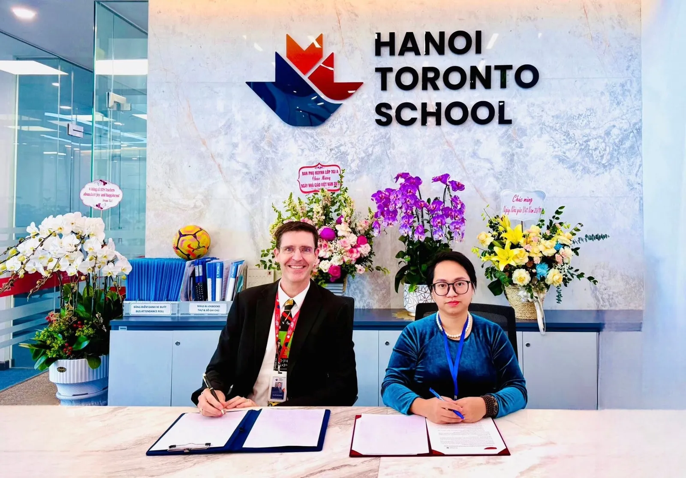

Photo gallery
Moments from our community
Youth programs, Vietnamese language and culture events, school partnerships and exchanges, in Toronto, across Canada and in Vietnam. Select a photo to view it larger.
Youth
Youth programs
Leadership, campus visits, orientation and community activities with the Viet Youth Readiness Hub.
Campus visits and youth exchange


VYRH launch, April 2026


Culture
Culture and community in Canada
Sharing Vietnamese traditions with schools, families and neighbours of every background.
Lunar New Year áo dài show


Lotus tea workshop


Vietnamese language and culture with international students


Hung Kings’ Commemoration Day 2026


Partnerships
Schools, colleges and universities
Partnership meetings and signings with education institutions in Canada and Vietnam.


Exchange
Canada–Vietnam exchanges
Cultural and educational exchanges that connect people and institutions in both countries.